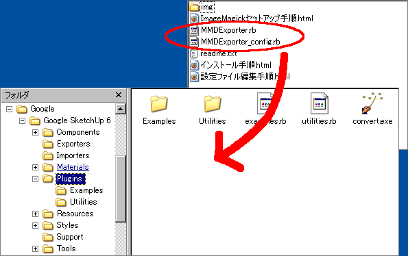

はじめに
このプラグインは、2ch/Youtube板「【MMD】MikuMikuDance動画制作/鑑賞スレ【初音ミク】 partミク」スレ 793を元に
2ch/Youtube板「【MMD】MikuMikuDance動画制作/鑑賞スレ【初音ミク】 part40」スレ 409氏が配布しているテクスチャファイルをTGAへ自動変換する機能を追加する改造版を元に修正を行いました。
１．ImageMagickをセットアップしてください。手順はこちら→ImageMagickセットアップ手順書
２．アーカイブを解凍すると出てくる"MMDExporter.rb"及び"MMDExporter_config.rb"をGoogle SketchUpの"Plugins"フォルダにコピーしてください。

３．必要に応じて設定ファイルを編集します。(デフォルトのままでも動きます)手順はこちら→設定ファイル編集手順書
４．以上でインストールは完了です。使用方法はREADME.rdocを参照ください。